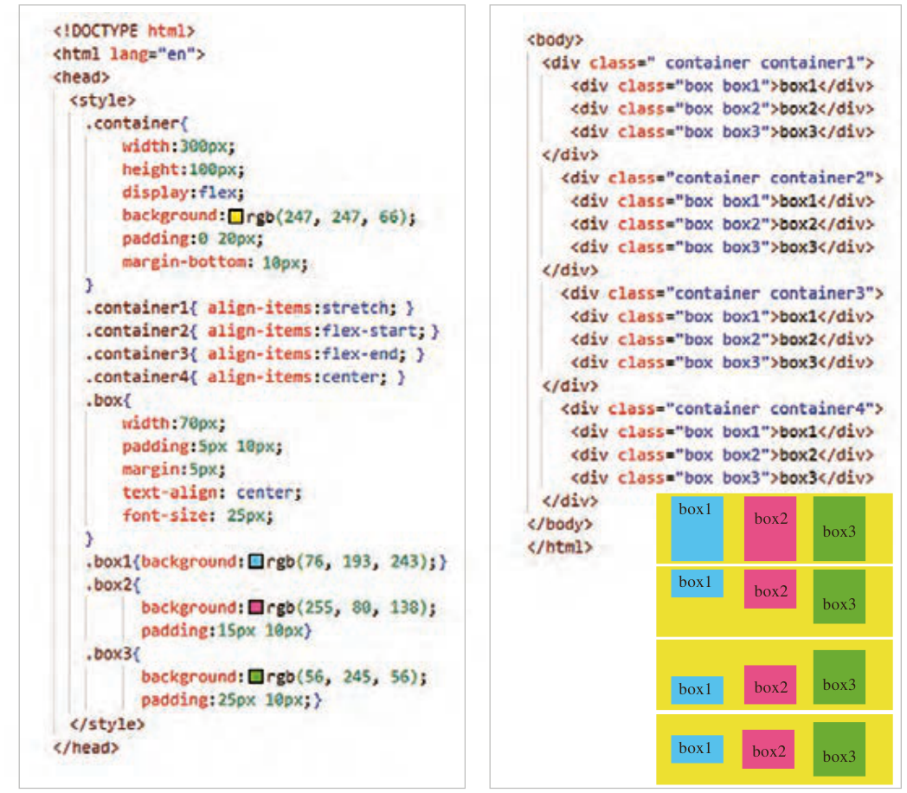

فلکس یک مدل طرحبندی در CSS است که برای ایجاد طرحهای منعطف، واکنشگرا و یک بعدی استفاده میشود. فلکس توانایی ایجاد یک چیدمان افقی یا عمودی را برای عناصر صفحه دارد؛ بهعلاوه امکان تراز کردن عناصر و توزیع خودکار فضا را به توسعهدهنده میدهد. طرحهایی که توسط flexbox ایجاد میشوند، با اندازههای مختلف صفحه نمایش سازگاری خواهند داشت (جدول 10).
تنظیم ویژگیهای عنصر والد
برای چینش افقی یا عمودی عناصر فرزند در یک عنصر مشخص، از مدل فلکس استفاده میشود. بدین منظور ویژگی display با مقدار Flex برای عنصر والد بهکار میرود. در حالت پیشفرض این کار باعث ایجاد چیدمان افقی برای فرزندان عنصر والد میگردد.
برای فعالکردن Flexbox کافی است ویژگی زیر را به عنصر والد اضافه کنید:
display: flex;
flex-direction: این ویژگی برای تعیین جهت چینش عناصر، بهصورت افقی یا عمودی استفاده میشود. مقادیر این ویژگی در جدول 10 مشخص شده است.
جدول ۱۰: مقادیر ویژگی flex-direction و تأثیر آنها روی نحوه چینش عناصر
مقدار
row
Row-reverse
توضیح
افقی (پیش فرض) flex-direction:row box1 box2 box3
افقی (راست به چپ) flex-direction:row-reverse box3 box2 box1
مقدار
column
Column-reverse
توضیح
عمودی از بالا به پایین flex-direction:column box1 box2 box3
عمودی از پایین به بالا flex-direction:column-reverse box3 box2 box1
صفحه ۱۳۳
flex-wrap: گاهی پهنای صفحه به اندازهای نیست که همه عناصر در کنار یکدیگر قرار بگیرند. ویژگی flex-wrap مشخص میکند که عناصر اضافی به سطر بعد منتقل شوند یا همگی در همان سطر فشرده شوند (جدول11).
جدول ۱۱: مقادیر ویژگی flex-wrap
مقدار
wrap
nowrap
توضیح
انتقال به سطر بعد
عدم انتقال به سطر بعد
flex-flow: ویژگی flex-flow ترکیب flex-direction و flex-wrap است. بهجای نوشتن دو خط کد میتوان هر دو ویژگی را در یک خط تنظیم نمود. مانند زیر:
.container{
flex-flow: row wrap;
}
justify-content: این ویژگی تراز عناصر و نحوه توزیع فضای خالی بین عناصر را در راستای محور اصلی کنترل میکند (جدول 12).
جدول ۱۲: مقادیر ویژگی justify-content
مقدار
توضیحات
مقدار
توضیحات
Flex-start
چینش عناصر در سمت چپ
Space-around
ایجاد فضای خالی به میزان برابر در اطراف هر عنصر
Flex-end
چینش عناصر در سمت راست
Space-between
فضای خالی برابر بین عناصر (عنصر اول و آخر به لبهها میچسبند)
Center
چینش عناصر در مرکز
Space-evenly
فضای خالی برابر در بین عناصر و همچنین بین عناصر و لبهها
صفحه ۱۳۴
align-items: ویژگی align-items در Flexbox برای ترازکردن عناصر در راستای محور متقاطع (عمود بر محور اصلی) استفاده میشود. به کمک این ویژگی میتوان عناصر را در بالا، پایین و وسط یک سطر قرار داد (شکل 26).

شکل ۲۶
جدول ۱۳: مقادیر ویژگی align-items
مقدار
Stretch
flex-start
flex-end
center
توضیح
بهصورت کشیده درون عنصر والد قرار میگیرد (پیشفرض)
در بالای عنصر والد قرار میگیرد.
در پایین عنصر والد قرار میگیرد.
در وسط عنصر والد قرار میگیرد.
صفحه ۱۳۵
طرح بندی صفحات با Flexbox
صفحه ۱۳۶
صفحه ۱۳۷
ایجاد بخش اصلی صفحه
بعد از طراحی بخش هدر سایت، نوبت به طراحی محتوای اصلی صفحه، شامل بخشهای «جدیدترین محصولات» و «خدمات ویژه» میرسد.
برای طراحی بخش اصلی صفحه از برچسب <main> استفاده میشود. این برچسب باید بعد از برچسب </header> و قبل از </body> قرار گیرد.
محتوای نواحی «جدیدترین محصولات» و «خدمات ویژه» باید درون عنصر <main> واقع شود.
صفحه ۱۳۸
Page 132
Flexbox layout
Flex is a CSS layout model used to create flexible, responsive, one-dimensional layouts. Flex can arrange page elements horizontally or vertically, and lets the developer align elements and share out space automatically. Layouts made with flexbox fit different screen sizes (Table 10).
Setting the properties of the parent element
The flex model is used to arrange the child elements of an element horizontally or vertically. For this, the display property with the value Flex is used on the parent element. By default this lays out the children of the parent horizontally.
To turn on Flexbox, just add the property below to the parent element:
display: flex;
flex-direction: sets the direction in which elements are arranged, horizontally or vertically. Its values are given in Table 10.
Table 10: The values of flex-direction and how they arrange elements
Horizontal (right to left) flex-direction:row-reverse box3 box2 box1
Value
column
Column-reverse
Description
Vertical, top to bottom flex-direction:column box1 box2 box3
Vertical, bottom to top flex-direction:column-reverse box3 box2 box1
Page 133
flex-wrap: sometimes the page is not wide enough for all elements to sit side by side. flex-wrap decides whether extra elements move to the next line or are all squeezed into the same line (Table 11).
Table 11: The values of flex-wrap
Value
wrap
nowrap
Description
Move to the next line
Do not move to the next line
flex-flow: flex-flow combines flex-direction and flex-wrap. Instead of writing two lines of code, you can set both properties in one line, as below:
.container{
flex-flow: row wrap;
}
justify-content: controls the alignment of elements and how the empty space between them is shared along the main axis (Table 12).
Table 12: The values of justify-content
Value
Description
Value
Description
Flex-start
Places the elements on the left
Space-around
Equal empty space around each element
Flex-end
Places the elements on the right
Space-between
Equal empty space between elements (the first and last touch the edges)
Center
Places the elements in the center
Space-evenly
Equal empty space between elements and also between the elements and the edges
Page 134
align-items: the align-items property in Flexbox is used to align elements along the cross axis (perpendicular to the main axis). With this property you can place the elements at the top, the bottom or the middle of a row (Figure 26).
Figure 26
Table 13: The values of align-items
Value
Stretch
flex-start
flex-end
center
Description
Stretched inside the parent element (default)
At the top of the parent element.
At the bottom of the parent element.
In the middle of the parent element.
Page 135
Laying out pages with Flexbox
Page 136
Page 137
Creating the main part of the page
After designing the site's header, it is time to design the main content of the page, with the «Newest products» and «Special services» sections.
The <main> tag is used for the main part of the page. It must come after the </header> tag and before </body>.
The content of the «Newest products» and «Special services» areas must be inside the <main> element.